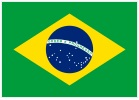
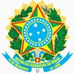
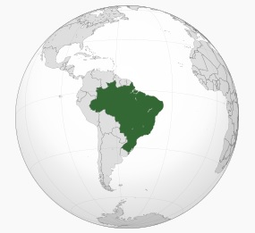

| Bandera | Escudo | Ubicación | Capital | Idiomas Oficiales | Gentilicio |
|---|---|---|---|---|---|
|  |  |  | Brasilia | Portugués | brasileño, -ña brasilero, -a |
Brasil, oficialmente República Federativa de Brasil (en portugués, República Federativa do Brasil), es un país soberano de América del Sur que comprende la mitad oriental del subcontinente y algunos grupos de pequeñas islas en el océano Atlántico. Es el país más grande de América Latina.
Con una superficie estimada en más de 8,5 millones de km², es el quinto país más grande del mundo en área total (equivalente a 47 % del territorio sudamericano). Delimitado por el océano Atlántico al este, Brasil tiene una línea costera de 7.491 km. Al norte limita con el departamento ultramarino francés de la Guayana Francesa, Surinam, Guyana y Venezuela; al noroeste con Colombia; al oeste con Perú y Bolivia; al suroeste con Paraguay y Argentina, y al sur con Uruguay. De este modo tiene frontera con todos los países de América del Sur, excepto Ecuador y Chile. La mayor parte del país está comprendido entre los trópicos terrestres, por lo que las estaciones climáticas no se sienten de una manera radical en gran parte de su territorio. La selva amazónica cubre 3,6 millones de km² del territorio. Gracias a su vegetación y al clima, es uno de los países con más especies de animales en el mundo.
Brasil, hasta entonces habitado por indígenas, tuvo su primer contacto con los europeos en el año 1.500 d.C. a través de una expedición portuguesa liderada por Pedro Álvares Cabral. Tras el Tratado de Tordesillas, el territorio brasileño fue el segmento del continente americano que correspondió al reino de Portugal, del cual obtuvo su independencia el 7 de septiembre de 1822. Así, el país pasó de ser parte central del reino de Portugal a un imperio para finalmente convertirse en una república. Su primera capital fue Salvador de Bahía, que fue sustituida por Río de Janeiro hasta que se construyó una nueva capital, Brasilia. Su constitución actual, formulada en 1988, define a Brasil como una República Federativa Presidencialista. La federación está formada por la unión del Distrito Federal, los 26 estados y los 5.570 municipios.
A pesar de que sus más de 210 millones de habitantes hacen de Brasil el quinto país más poblado del mundo, presenta un bajo índice de densidad poblacional. Esto se debe a que la mayor parte de la población se concentra a lo largo del litoral, mientras que el interior del territorio aún está marcado por enormes vacíos demográficos. El idioma oficial y el más hablado es el portugués, que lo convierte en el mayor país lusófono del mundo. Por su parte, la religión con más seguidores es el catolicismo, siendo el país con mayor número de católicos nominales del mundo. La sociedad brasileña es considerada una sociedad multiétnica al estar formada por descendientes de europeos, indígenas, africanos y asiáticos.
La economía brasileña es la mayor de América Latina y del hemisferio sur, la sexta mayor del mundo por PIB nominal y la séptima mayor por paridad del poder adquisitivo (PPC). Es considerado una economía de renta media-alta por el Banco Mundial y un país recientemente industrializado, que tiene la mayor proporción de riqueza global de América Latina debido al abundante petróleo y diversos minerales encontrados fácilmente en el país. Sin embargo, su abundante riqueza está muy concentrada, convirtiendo al país en uno de los más desiguales del mundo, el 10% más rico de su población recibió el 54% de la renta nacional en 2018. Como potencia regional y media, la nación tiene reconocimiento e influencia internacional, siendo que también es clasificada como una potencia global emergente y como una potencial superpotencia por varios analistas.
El país es miembro fundador de la Organización de las Naciones Unidas (ONU), G20, Comunidad de Países de Lengua Portuguesa (CPLP), Unión Latina, Organización de los Estados Americanos (OEA), Organización de los Estados iberoamericanos (OEI), Mercado Común del Sur (Mercosur) y de la Unión de Naciones Sudamericanas (Unasur), además de ser uno de los países BRIC.